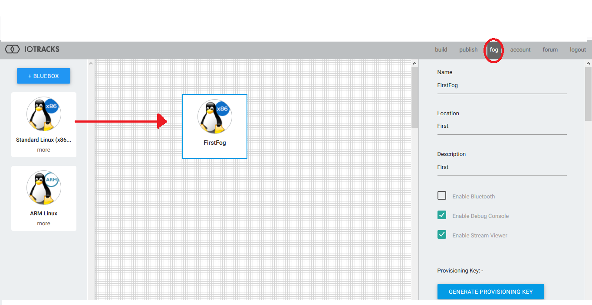

Getting Started Tutorial¶
This document discusses how IoFog can be used to filter data at the edge. The IoFog platform provides a way to run code remotely.The code/logic which we want to run is packaged as small micro services which are provided as a docker images.IoFog provide interface to communicate between these micro services. Flow of data is assume to be starting from a microservices which generate time series data. This data is then filtered using Tempus Filter service. Using MQTT service the filtered data is sent to ThingsBoard server.
Features¶
Tempus IoFog services has following feature:
- Create Micro-service for creating simulated timeseries data.
- Create a filter service which filter out data at source.
- Send only filtered data to the ThingsBoard.
Requirements¶
- JDK 1.8 at a minimum
- Maven 3.1 or newer
- Git client (to build locally)
Getting Started¶
Provision the Fog¶
Login to IoFog to access tracks and fogs.
After login go to the fog tab drag a fog instance on fog page.And click on new fog instance.
Click on new fog instance.On right hand you will see properties of fog. Press the generate key to get id of the fog for provisioning. <img src=”./images/readme_images/2.png” width=”910” height=”545”/>
Go to your Linux command line, type ‘sudo iofog provision ABCDWXYZ’ and replace the ABCDWXYZ with your provisioning key (it is case sensitive) and verify the results You can follow below link to get started:
### Creating edge applications
IoFog provides an SDK in four languages to create edge applications: 1) Java 2) Python 3) NodeJS 4) Go
### Publishing edge applications
1.Log in to the [ioAuthoring page](https://iotracks.com/login).
2.Use the “Publish” menu to access the publishing portal.
3.Drag and drop the proper hardware element to the main area. Make sure the element matches the hardware you want your applicaiton to run on.
4.Add Name to your Element.
- 5.Add Container Image URL. It is the path to repository where the container is posted
- Be sure to enter your container image string properly.
<img src=”./images/readme_images/3.png” width=”910” height=”545”></img>
Following link discuss in detail how to create and publish microservices:
`https://iotracks.com/creatingmicroservices `
### Configuring Services
Time Series Service:
No Configuration Needed.
Json Filter Service:
Basic building block of the service has 3 terms:
“term”: “value.density”, “OP” : “GTE”, “value”: 0
}¶
- term : The term in json on which filter needs to be applied. The child term can be
accessec using dot. Example:
- “range”: {
- “start”:0, “end”:100
}
}¶
if you want to filter on “start” mention “range.start” in the term.
- OP : Operation is what operation you need to perform on the the term.Allowed operation
- LEQ : less than equal
- GEQ : greater than equal
- LT : less than
- GT : greater tham
- EQ : equals
- NEQ : not equal
iii)**value** : Value with which operation on term need to be done
Filters are furthur divided into a) String Filters
- Double Filters
- Boolean Filters
- “DOUBLE”:{
- “term”: “value.density”, “OP” : “GTE”, “value”: 0
}
}¶
This tells filter type of term.
To create complex query AND and OR Filters are also provided. AND/OR filter
“EXP1”:”..”, “EXP2”:”..”
}¶
Both EXP1/EXP2 both can be again AND ,OR filter or and of String,Double or Boolean Filter
- “OR”: {
- “EXP1”: {
- “AND”: {
- “EXP1”: {
- “DOUBLE”: {
- “term”: “value.density”, “OP”: “GTE “, “value”: 0
}
}, “EXP2”: {
- “DOUBLE”: {
- “term”: “value.density”, “OP”: “LTE”, “value”: 1
}
}
}
}, “EXP2”: {
- “STRING”: {
- “term”: “value.TYPE.id”, “OP”: “NEQ”, “value”: “TEST”
}
}
}
}¶
3)**MQTT-Service**
For MQTT service you need to define
- Publishers
- Broker
- User of device in things board
Example:
- “subscriptions”: [{
- “topic”: “v1/devices/me/telemetry”, “qos”: 2
}], “publishers”: [{
“topic”: “v1/devices/me/telemetry”, “qos”: 2}], “broker”: {
“host”: “192.168.1.183”, “port”: 1883}, “user”: {
“username”: “ioFogToken”, “password”: ” “}
}¶
## Usage
- Publish the 3 tempus services as discussed above.
2) Configure the services. 2) Create a track with services as shown below.
<img src=”./images/readme_images/4.png” width=”910” height=”545”></img>
- You can check data flowing into ThingsBoard.
## License
Licensed under the Apache License, Version 2.0 (the “License”); you may not use this file except in compliance with the License. You may obtain a copy of the License at
Unless required by applicable law or agreed to in writing, software distributed under the License is distributed on an “AS IS” BASIS, WITHOUT WARRANTIES OR CONDITIONS OF ANY KIND, either express or implied. See the License for the specific language governing permissions and limitations under the License.